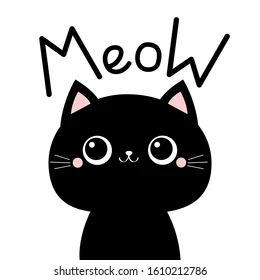
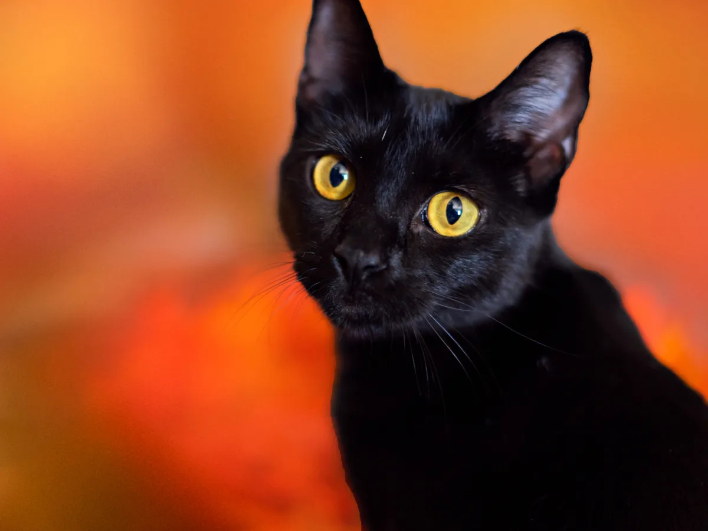
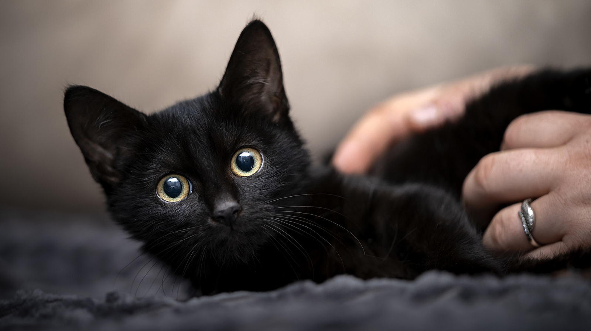
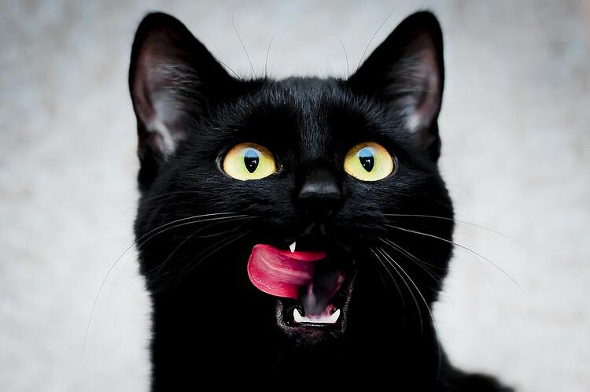
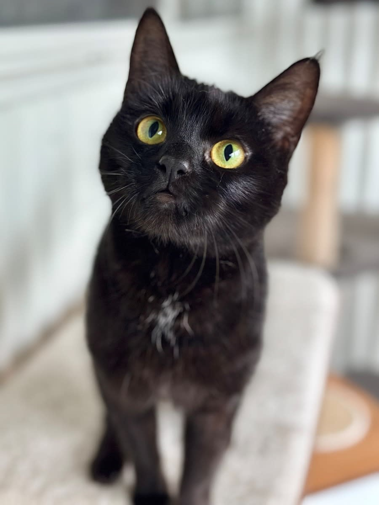

Black Cat Inc.
Black cats have the lowest adoption rate of any breed. This doesn't seem fair to us, so we set out to change that.

Black cats have the lowest adoption rate of any breed. This doesn't seem fair to us, so we set out to change that.

Nella: 38 years old, single mother of two kids in full time employment looking for a home

Jim-Bob: Two years old, playful deliquent with a prior for arson that definitely wasn't his fault

Keith: 25 years old, affectionatly referred to as the chief. Holds a spot in the Guiness Book of World Records for most burgers consumed in ten minutes

Daveed: 45 years old, pulled his neck playing football at the tender age of 15. Hasn't been able to look down since.
"A cat has absolute emtional honesty: human beings, for one reason or another, may hide their feelings, but a cat does not."
-Ernest Hemingway